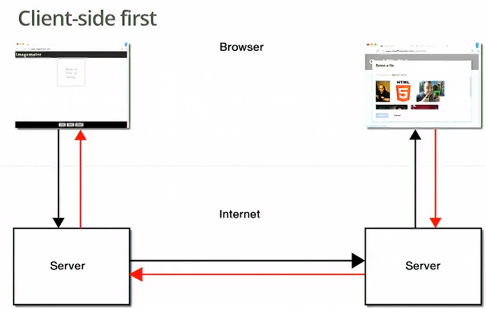
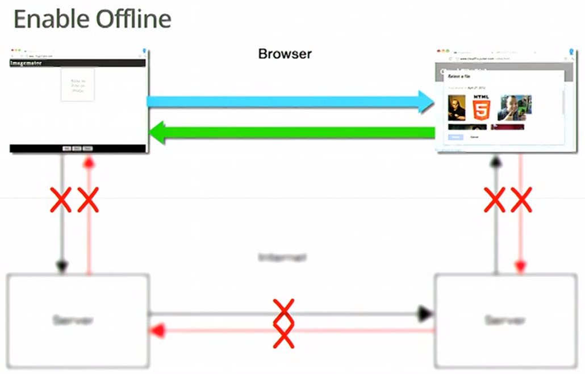

Your browser doesn't support impress.js. Try Chrome or Safari.
Web Intents
diving into the new spec
By Aaron Frost
Aaron Frost
- OpenWeb Dev/Evangelist
- Husband and Father (2 Girls, 1 Boy)
- Author: JS.Next w/ O'Reilly, May 2013
- Google Fanboy
- Twin: older/better-looking/smarter one
- ingress: resistance
- Fishing
Today we're talking WebIntents
What about them?
Topics
- What are WebIntents?
- What problem are they solving?
- How does it work?
- Who is using them?
- BAD NEWS
- Live Demo - tempting the demogods
What are WebIntents?
Per the intro on webintents.org
Framework for client-side inter-application communication
Framework for client-side service discovery
What are WebIntents?
Framework for client-side inter-application communication
Framework for client-side service discovery
Please Explain More!!!
Let's talk about both of those
What are WebIntents?
client-side inter-application communication
- None of my apps are aware of each other
What are WebIntents?
client-side inter-application communication
- Every site we go to is a virtual silo, from a user perspective
What are WebIntents?
client-side inter-application communication
Sites like Twitter
- don't know where i've been
- not sure what I going to do when I leave
What are WebIntents?
client-side inter-application communication
Currently there is no Client-side Inter-application Communication
- It is intentional
- Consider web security
- If visiting Walmart.com meant that Walmart.com could read my email...
What are WebIntents?
client-side inter-application communication
Why is no CSIAComm a problem?
- You can only interact with who I say you can
What are WebIntents?
client-side inter-application communication
Why is no CSIAComm a problem?
- You can only interact with who I say you can
What are WebIntents?
client-side service discovery
What are WebIntents?
client-side service discovery
- a site doesn't know what other sites I like
What are WebIntents?
client-side service discovery
- no idea if I already have a preferred image editor
What are WebIntents?
client-side service discovery
- you can only use the services I say you can
- »Facebook Image Cropper
What are WebIntents?
Summary
The web of today is a giant, manually-hand-stitched web of integration
WebIntents can make it all easier!!!
What Problem Do They Solve?
Let's discuss
What Problem Do They Solve?
What do we do on the web?
- Interact Socially
- Read
- SHARE
- EDIT
- CONSUME (music, pics, etc)
What Problem Do They Solve?
Some of this could be easier for the end user
What Problem Do They Solve?
Some of this could be easier for the end user
Example: Share a pic from my webmail inbox
- Download to Desktop
- Open 3rd Party Site
- Click Open Button
- Find the File on Desktop
- Submit
What Problem Do They Solve?
Some of this could be easier for the end user
- Listen to music in my Dropbox folder
- Save PDF attachments on an email
- Read books from our Safari or O'Reilly account
- etc
This could all be easier for the end users
What Problem Do They Solve?
It could be easier for the developers too!
What Problem Do They Solve?
It could be easier for the developers too!
As a Site Owner:
- Do we want to add one Share button for each social network?
What Problem Do They Solve?
It could be easier for the developers too!
As a Site Owner:
- Do we want to manually create a site that OAuths, then loads out pics/music/documents?
What Problem Do They Solve?
It could be easier for the developers too!
As a Site Owner:
- Do we want to slowly decide each of the sites that we will integrate with?
- »What if those sites go down?
- »What if they update?
What Problem Do They Solve?
As a Site Owner:
- What if the use could chose what service to save their files to?
What Problem Do They Solve?
As a Site Owner:
- Chose where they wanted to share my content to?
- not restricted to where I have built integration points to
What Problem Do They Solve?
As a Site Owner:
- What if they could chose a separate image editor?
- »Now we don't have to build an client-side image editor!!!
- »Now we don't have to build a server-side image processing service!!!
What Problem Do They Solve?
As a Site Owner:
Now, with a small amount of code we could do AJAX-less integrations with Picasa for Image Editing
- no maintenence for the image cropper
- no storing Picasa OAuth tokens
- no server running in between running interference
What Problem Do They Solve?
As a Site Owner:
TOO...MUCH...WINNING!
What Problem Do They Solve?
To put it another way
Today user can:
- only do what developers say they can
- only interact with what the developers prepared
- not easily do something the developer didn't think about
What Problem Do They Solve?
This needs to change
- I want to store what I want, where I WANT IT
- I want to share what I want, where I WANT IT
No more waiting for the developer to build it
What Problem Do They Solve?
We already have a great example of an industry facing this exact situation. One part of us has yet to solve it, while the other part has solved it.
What Problem Do They Solve?
We already have a great example of an industry facing this exact situation. One part of us has yet to solve it, while the other part has solved it.
What Problem Do They Solve?
iOS
Same as the web currently
- can only share where dev says
- can only interact how the dev says
- integration with a 3rd party service requires a button to be placed somewhere
What Problem Do They Solve?
Android
They have Intents built in
- Want to share a file, fire an intent to share
- All apps registered as Sharers will be available to handle that request
- »No interaction from the dev
- »Allowed the user to do what they wanted to
How Does It Work?
How Does It Work?
Take the integration to the client and away from the server
take a look at this diagram
How Does It Work?

How Does It Work?

How Does It Work?
Certain sites register their abilities to do certain things
How Does It Work?
Certain sites register their abilities to do certain things
Other sites request of list of sites that have certain abilities
How Does It Work?
Certain sites register their abilities to do certain things
Other sites request of list of sites that have certain abilities
The browser shows the user a list of registered sites that have that ability
The user picks an already installed app, or a list from the Chrome Store (or whatever FF uses)
How Does It Work?
5-Stages in the Lifecyle (no particular order)
- Registration
- Invocation
- Selection
- Delivery
- Response
How Does It Work?
Registration
How do sites register their abilities?
- Add the 'intent' tag to your page
- Register it in their manifest for the Chrome Web Store
How Does It Work?
Registration
Once registered, each time the user tries to use your ability, your app appears on their list of Services
How Does It Work?
Registration
How to UN-Register?
- Remove the 'intent' tag from your page (implicit)
- Remove the 'type' and 'action' from the intent tag (explicit)
How Does It Work?
Invocation
Invocation happens when a user initiated action fires off a new Activity with an Intent
How Does It Work?
Invocation
If the user has a pre-set preference for this intent action, it will go directly to that, or if there
was an explicit service provided, the Select window will not appear
How Does It Work?
Invocation
If the developer doesn't provide a type (refers to mime type) or an action, the WI constructor will fail
How Does It Work?
Selection
How Does It Work?
Selection
This is where you decide what Service to use
- a pre-installed one
- install a new one
How Does It Work?
Selection
I would imagine that browser vendors could monetize this
How Does It Work?
Selection
Also, sites could make some money here by promoting recommended Services
How Does It Work?
Delivery
This is the handoff from the browser to the Service App
How Does It Work?
Delivery
Transferable Data -
If your passing a large blog (song or image), rather than copy the data over, we can have Chrome
transfer your data to where it goes, making it more efficient
How Does It Work?
Response
How Does It Work?
Response
This is when the Service App is done, and it sends a result of some sort back to the Client App
How Does It Work?
Response
The client can listen for a response by passing a callback at the time the WebIntent is instantiated
How Does It Work?
Response - Error
The client can listen for an Error response by passing an error callback handler when the WebIntent is instantiated
How Does It Work?
Response - Error
Several Reasons For An Error
- If the service called postResult twice
- Close the Service page before it is done
- Click cancel during the Selection stage
How Does It Work?
Response
If you don't pass your postResult and postFailure callback handlers when constructing the WebIntent,
you have no way of knowing when the intent Lifecyle is complete.
How Does It Work?
Service App Security
The service app may need to redirect to a login page, and the login page may lose visibility to the requested data.
Thank You!